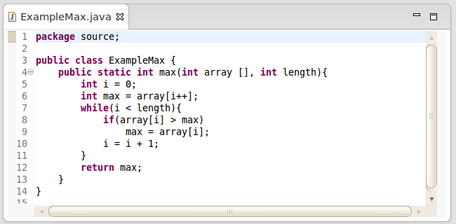
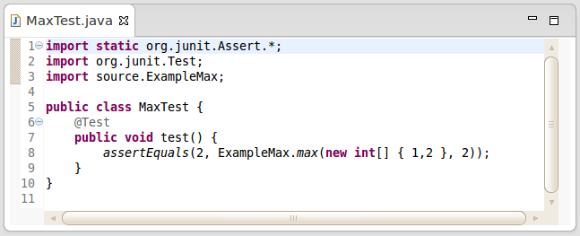
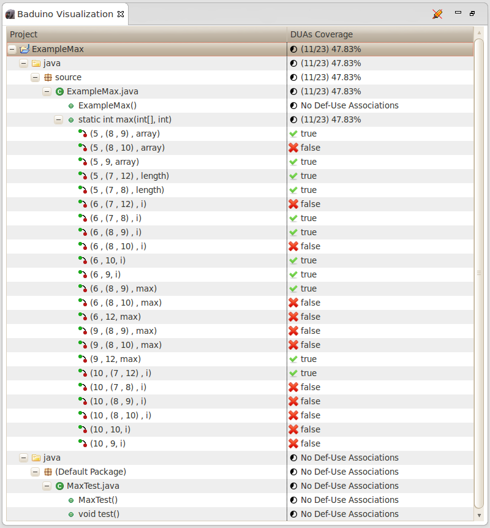
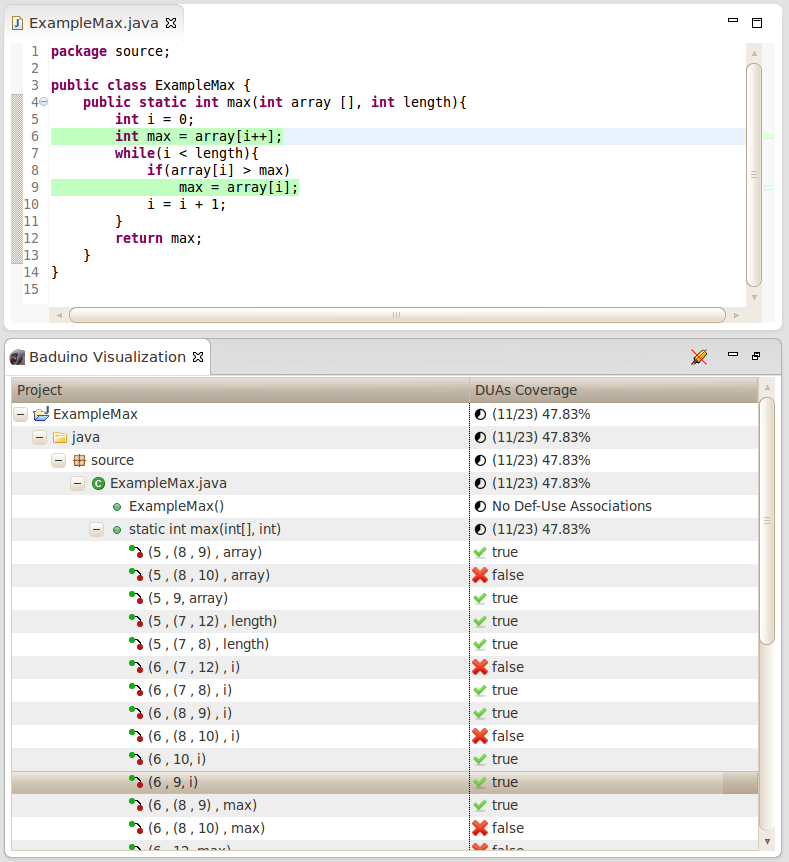
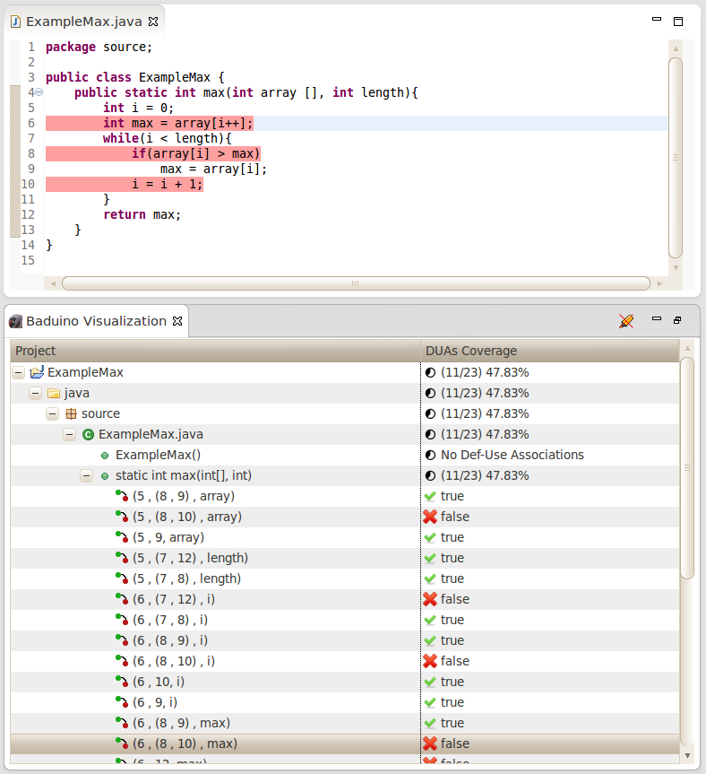

Max
Max is a method that receive two parameters (An array of integers and an integer with the array length )
and return the maximum array value.
Source Code

The test case below was done with JUnit and this check if the return of max ([1,2] , 2) is 2.
Test Class

To get the DUAs coverage, this require to run JUnit tests with a custom runner, its set JaCoCo(Program who run the BA-DUA algorithm) as agent,
and it will instrument the classes used by the tests and will collect the DUAs coverage.
The Jaguar, responsible by the custom JUnit Runner, also is responsible to store the coverage data after the tests ending,
saving coverage in an archive called Baduino.xml in the root project .
This procedure is done by: Right click on project -> Baduino -> Run Tests
After you get the DUAs coverage in XML, the plugin will show DUAs coverage on interface.
To visualize DUAs: Right Click on project/folder/package/class -> Project/Folder/Package/Class Visualization
Note: The visualization is hierarchical, by clicking in Project Visualization will be shown whole DUAs coverage of the project, and so on.
Plugin interface

On the interface, its possible to click on DUAs and the Definition lines and Use lines will be highlighted in the source code like is show below.
Covered DUAs and Uncovered DUAs will be highlighted of green and red,respectively.
Also is possible to remove all highlights clicking on  Remove Highlight in the upper right corner of the View.
Remove Highlight in the upper right corner of the View.
Covered DUA

Uncovered DUA
